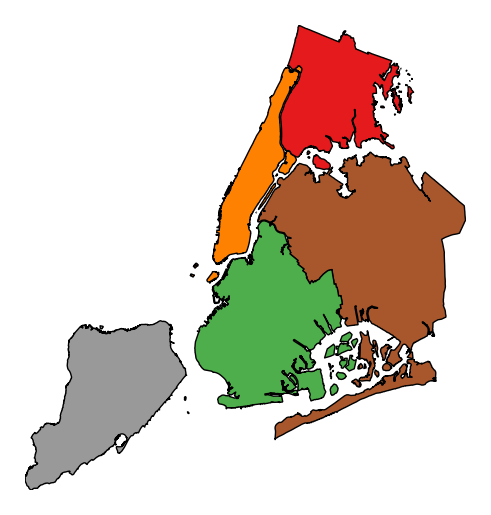

geoplot.choropleth¶
-
geoplot.choropleth(df, projection=None, hue=None, scheme=None, k=5, cmap='Set1', categorical=False, vmin=None, vmax=None, legend=False, legend_kwargs=None, legend_labels=None, extent=None, figsize=(8, 6), ax=None, **kwargs)¶ A simple aggregation plot based on geometry.
Parameters: - df (GeoDataFrame) – The data being plotted.
- projection (geoplot.crs object instance, optional) – A geographic projection. Must be an instance of an object in the
geoplot.crsmodule, e.g.geoplot.crs.PlateCarree(). This parameter is optional: if left unspecified, a pure unprojectedmatplotlibobject will be returned. For more information refer to the tutorial page on projections. - hue (None, Series, GeoSeries, iterable, or str) – A data column whose values are to be colorized. Defaults to None, in which case no colormap will be applied.
- categorical (boolean, optional) – Specify this variable to be
Trueifhuepoints to a categorical variable. Defaults to False. Ignored ifhueis set to None or not specified. - scheme (None or {"Quantiles"|"Equal_interval"|"Fisher_Jenks"}, optional) – The scheme which will be used to determine categorical bins for the
huechoropleth. Ifhueis left unspecified or set to None this variable is ignored. - k (int or None, optional) – If
categoricalis False or left unspecified, this number, set to 5 by default, will determine how many bins will exist in the output visualization. If this variable is set toNone, a continuous colormap will be used. - cmap (matplotlib color, optional) – The matplotlib colormap to be applied to this dataset (ref). Defaults to
viridis. - vmin (float, optional) – The value that “bottoms out” the colormap. Data column entries whose value is below this level will be colored the same threshold value. Defaults to the minimum value in the dataset.
- vmax (float, optional) – The value that “tops out” the colormap. Data column entries whose value is above this level will be colored the same threshold value. Defaults to the maximum value in the dataset.
- legend (boolean, optional) – Whether or not to include a legend in the output plot.
- legend_values (list, optional) – Equal intervals will be used for the “points” in the legend by default. However, particularly if your scale is non-linear, oftentimes this isn’t what you want. If this variable is provided as well, the values included in the input will be used by the legend instead.
- legend_labels (list, optional) – If a legend is specified, this parameter can be used to control what names will be attached to the values.
- legend_kwargs (dict, optional) –
Keyword arguments to be passed to the underlying
matplotlib.pyplot.legendinstance (ref). - extent (None or (minx, maxx, miny, maxy), optional) – If this parameter is unset
geoplotwill calculate the plot limits. If an extrema tuple is passed, that input will be used instead. - figsize (tuple, optional) – An (x, y) tuple passed to
matplotlib.figurewhich sets the size, in inches, of the resultant plot. Defaults to (8, 6), thematplotlibdefault global. - ax (AxesSubplot or GeoAxesSubplot instance, optional) – A
matplotlib.axes.AxesSubplotorcartopy.mpl.geoaxes.GeoAxesSubplotinstance onto which this plot will be graphed. If this parameter is left undefined a new axis will be created and used instead. - kwargs (dict, optional) –
Keyword arguments to be passed to the underlying
matplotlib.patches.Polygoninstances (ref).
Returns: The axis object with the plot on it.
Return type: AxesSubplot or GeoAxesSubplot instance
Examples
The choropleth is a standard-bearer of the field. To make one yourself, you will need a series of enclosed areas, consisting of
shapelyPolygonorMultiPolygonentities, and a series of data about them that you would like to express in color. A basic choropleth requires geometry, ahuevariable, and, optionally, a projection.import geoplot as gplt import geoplot.crs as gcrs gplt.choropleth(polydata, hue='latdep', projection=gcrs.PlateCarree())

Change the colormap with the
cmapparameter.gplt.choropleth(polydata, hue='latdep', projection=gcrs.PlateCarree(), cmap='Blues')

If your variable of interest is already categorical, you can specify
categorical=Trueto use the labels in your dataset directly.gplt.choropleth(boroughs, projection=gcrs.AlbersEqualArea(), hue='BoroName', categorical=True)
To add a legend, specify
legend.gplt.choropleth(boroughs, projection=gcrs.AlbersEqualArea(), hue='BoroName', categorical=True, legend=True)

Keyword arguments can be passed to the legend using the
legend_kwargsargument. These arguments, often necessary to properly position the legend, will be passed to the underlying matplotlib Legend instance.gplt.choropleth(boroughs, projection=gcrs.AlbersEqualArea(), hue='BoroName', categorical=True, legend=True, legend_kwargs={'loc': 'upper left'})

Additional arguments not in the method signature will be passed as keyword parameters to the underlying matplotlib Polygon patches.
gplt.choropleth(boroughs, projection=gcrs.AlbersEqualArea(), hue='BoroName', categorical=True, linewidth=0)

Choropleths default to splitting the data into five buckets with approximately equal numbers of observations in them. Change the number of buckets by specifying
k.gplt.choropleth(census_tracts, hue='mock_data', projection=gcrs.AlbersEqualArea(), legend=True, edgecolor='white', linewidth=0.5, legend_kwargs={'loc': 'upper left'}, k=2)

To use a continuous colormap, specify
k=None. In this case a colorbar legend will be used.gplt.choropleth(polydata, hue='latdep', cmap='Blues', k=None, legend=True, projection=gcrs.PlateCarree())

legend_labelscontrols the legend labels.gplt.choropleth(census_tracts, hue='mock_data', projection=gcrs.AlbersEqualArea(), edgecolor='white', linewidth=0.5, legend=True, legend_kwargs={'loc': 'upper left'}, legend_labels=['Very Low', 'Low', 'Medium', 'High', 'Very High'])

Alternatively, change the scheme used to generate the buckets with the
schemeparameter.equal_interval, for example, will generate buckets of equal data distribution size instead.gplt.choropleth(census_tracts, hue='mock_data', projection=gcrs.AlbersEqualArea(), legend=True, edgecolor='white', linewidth=0.5, legend_kwargs={'loc': 'upper left'}, scheme='equal_interval')